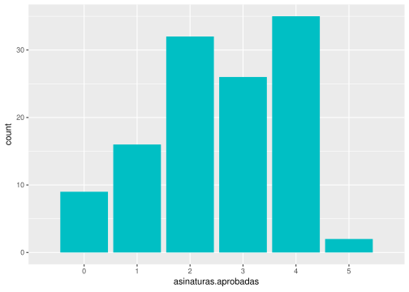
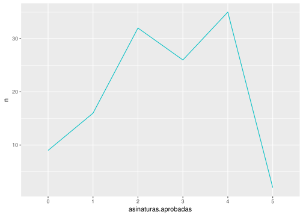
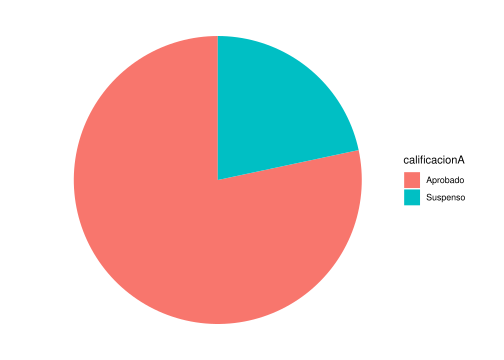
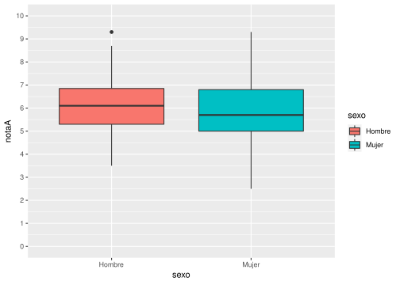
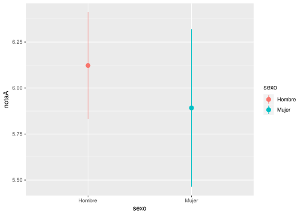
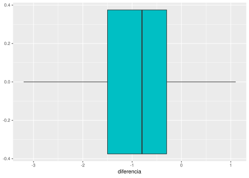
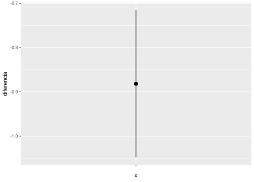
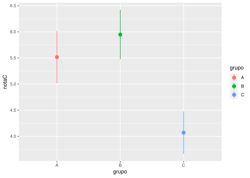

Tipos de estudios estadísticos El tipo de estudio estadístico más apropiado en cada caso depende de varios factores: El objetivo del estudio. El número de variables que intervienen. El tipo de las variables dependientes e independientes. La naturaleza de las observaciones (independientes o emparejadas). A continuación se presentan los estudios estadísticos más habituales en función de estos factores. La siguiente tabla puede ayudar a identificar el más apropiado en cada caso. Variables independientes Variable dependiente Objetivo Ejemplo Contraste Ninguna (Una población) Cuantitativa Contrastar la normalidad de una variable Comprobar si la nota de un examen tiene distribución normal (forma de campana de Gauss) Komogorov-Smirnov (requiere muestras grandes) Shapiro-Willks Cuantitativa normal Contrastar si la media poblacional de una variable tiene un valor determinado Comprobar si la nota media de un examen es 5 Test T para la media de una población Cuantitativa o cualitativa ordinal Contrastar si la mediana poblacional de una variable tiene un valor determinado Comprobar si la calificación mediana de un examen es Aprobado Test para la mediana de una población Cualitativa (2 categorías) Contrastar si la proporción poblacional de una de las categorías tiene un valor determinado Comprobar si la proporción de aprobados es de la mitad (o que el porcentaje es 50%) Test Binomial Cualitativa Contrastar si las proporciones de cada una de las categorías tienen un valor determinado Comprobar si las proporciones de alumnos matriculados en ciencias, letras o mixtas son 0.5, 0.2 y 0.3 respectivamente Test Chi-cuadrado de bondad de ajuste Una cualitativa con dos categorías independientes (Dos poblaciones independientes) Cuantitativa normal Contrastar si hay diferencias entre las medias la variable dependiente en dos poblaciones independientes Comprobar si el grupo de mañana y el grupo de tarde han tenido notas medias diferentes Test T para la comparación de medias de poblaciones independientes Contrastar si hay diferencias entre las varianzas de la variable dependiente en dos poblaciones independientes Comprobar si hay diferencias entre la variabilidad de las notas del grupo de mañana y el de tarde Test F de Fisher Contrastar si hay concordancia o acuerdo entre las dos variables Comprobar si hay concordancia o acuerdo entre las notas que ponen dos profesores distintos para los mismos exámenes Correlación intraclase Cuantitativa o cualitativa ordinal Contrastar si hay diferencias entre las distribuciones de la variable dependiente en dos poblaciones independientes Comprobar si el grupo de mañana y el grupo de tarde han tenido calificaciones diferentes Test de la U de Mann-Whitney Contrastar si hay concordancia o acuerdo entre las dos variables Comprobar si hay concordancia o acuerdo entre las calificaciones que ponen dos profesores distintos para los mismos exámenes Kappa de Cohen Cualitativa Contrastar si hay relación entre las dos variables o bien si hay diferencias entre las proporciones de las categorías de la variable dependiente en las dos poblaciones definidas por las categorías de la variable independiente Comprobar si existe relación entre los aprobados en una asignatura y el grupo al que pertenecen los alumnos, es decir, si la proporción de aprobados es diferente en dos grupos distintos. Test Chi-cuadrado (si no ha más del 20% de frecuencias esperadas menores que 5) Test exacto de Fisher Contrastar si hay concordancia o acuerdo entre las dos variables Comprobar si hay concordancia o acuerdo entre la valoración (aprobado o suspenso) que hacen dos profesores distintos para los mismos exámenes Kappa de Cohen Una cualitativa con dos categorías relacionadas o pareadas (Dos poblaciones relacionadas o pareadas) Cuantitativa normal Contrastar si hay diferencias entre las medias de la variable dependiente en dos poblaciones relacionadas o pareadas Comprobar si las notas medias de dos asignaturas cursadas por los mismos alumnos han sido diferentes o si las notas medias de un examen realizado al comienzo del curso (antes) y otro al final (después) de una misma asignatura han sido diferentes Test T para la comparación de medias de poblaciones relacionadas o pareadas Cuantitativa o cualitativa ordinal Contrastar si hay diferencias entre las distribuciones de la variable dependiente en dos poblaciones relacionadas o pareadas Comprobar si las calificaciones de dos asignaturas cursadas por los mismos alumnos han sido diferentes Test de Wilcoxon Cualitativa con dos categorías Contrastar si hay diferencias entre las proporciones de las categorías de la variable dependiente en dos poblaciones relacionadas o pareadas Comprobar si la proporción o el porcentaje de aprobados en un examen es distinta al comienzo y al final del curso Test de McNemar Una cualitativa con dos o más categorías independientes (Dos o más poblaciones independientes) Cuantitativa normal y homogeneidad de varianzas Contrastar si hay diferencias entre las medias la variable dependiente en cada una de las poblaciones definidas por las categorías de la variable independiente Comprobar si existen diferencias entre las notas medias de tres grupos distintos de clase. Análisis de la Varianza de un factor (ANOVA) Si hay diferencias > Test de Tukey o Bonferroni para la diferencia por pares Cuantitativa normal Contrastar si hay diferencias entre las varianzas de la variable dependiente en cada una de las poblaciones definidas por las categorías de la variable independiente Comprobar si la variabilidad de las notas de una asignatura es distinta en tres grupos diferentes de clase Prueba de Levene para la homogeneidad de varianzas Cuantitativa o cualitativa ordinal Contrastar si hay diferencias entre las distribuciones de la variable dependiente en cada una de las poblaciones definidas por las categorías de la variable independiente Comprobar si existen diferencias entre las calificaciones de tres grupos distintos de clase Test de Kruskal Wallis Cualitativa Contrastar si hay relación entre las dos variables o bien si hay diferencias entre las proporciones de las categorías de la variable dependiente en cada una de las poblaciones definidas por las categorías de la variable independiente Comprobar si existe relación entre los aprobados en una asignatura y el grupo al que pertenecen los alumnos, es decir, si la proporción de aprobados es diferente en los distintos grupos. Test Chi-cuadrado (si no ha más del 20% de frecuencias esperadas menores que 5) Test exacto de Fisher Una cualitativa con dos o más categorías relacionadas (medidas repetidas) Cuantitativa normal Contrastar si hay diferencias entre las medias repetidas de la variable dependiente Comprobar si hay diferencias entre las notas que otorgan varios profesores a un mismo examen Análisis de la Varianza (ANOVA) de medidas repetidas de un factor Cuantitativa o cualitativa ordinal Contrastar si hay diferencias entre las medidas repetidas de la variable dependiente Comprobar si hay diferencias entre las calificaciones que otorgan varios profesores a un mismo examen Test de Friedman Cualitativa Contrastar si hay diferencias entre las valoraciones repetidas de la variable dependiente Comprobar si hay diferencias entre la valoración (aprobado o suspenso) que hacen varios profesores de un mismo examen Regresión logística de medidas repetidas Una cuantitativa normal Cuantitativa normal Contrastar si existe relación lineal entre las dos variables Comprobar si existe relación entre las notas de dos asignaturas Correlación de Pearson Construir un modelo predictivo que explique la variable dependiente en función de la independiente Construir el modelo (función de regresión) que mejor explique la relación entre la nota de un examen y las horas dedicadas a su estudio Regresión simple (lineal o no lineal) Cuantitativa o cualitativa ordinal Contrastar si existe relación lineal entre las dos variables Comprobar si existe relación entre las calificaciones de dos asignaturas Correlación de Spearman Cualitativa Construir un modelo predictivo que explique la variable dependiente en función de la independiente Construir el modelo (función logística) que mejor explique la relación entre el resultado de un examen (aprobado o suspenso) y las horas dedicadas a su estudio Regresión logística simple Los ejemplos de los distintos test que se presentan a continuación se han realizado a partir del siguiente conjunto de datos que contiene las notas y calificaciones de un curso. El fichero con los datos puede descargarse aquí para reproducir los estudios: datos-curso.csv library(tidyverse) Una variable cuantitativa Estudios descriptivos Estadísticos Tamaño muestral Media Desviación típica Mínimo, Máximo Cuartiles Coeficiente de asimetría Coeficiente de apuntamiento # Tamaño muestral nrow(df) ## [1] 120 # Media mean(df$notaA, na.rm = TRUE) ## [1] 6.028333 # Desviación típica sd(df$notaA, na.rm = TRUE) ## [1] 1.340524 # Min, max min(df$notaA, na.rm = TRUE) ## [1] 2.5 max(df$notaA, na.rm = TRUE) ## [1] 9.3 # Cuartiles quantile(df$notaA, c(0.25, 0.5, 0.75), na.rm = TRUE) ## 25% 50% 75% ## 5.100 5.900 6.825 # Coef. asimetría library(moments) skewness(df$notaA, na.rm = TRUE) ## [1] 0.1373915 # Coef. apuntamiento kurtosis(df$notaA, na.rm = TRUE) - 3 ## [1] -0.102287 Gráficos Diagrama de barras (variables discretas) df %>% ggplot(aes(x = asinaturas.aprobadas)) + geom_bar(fill="#00BFC4") + # Cambio de escala del eje X scale_x_discrete(limits=0:5)  Histograma library(ggplot2) # Límites de los intervalos breaks = 0:10 # Histograma de las notasA df %>% ggplot(aes(x = notaA)) + geom_histogram(breaks = breaks, fill="#00BFC4") + # Cambio de escala del eje X scale_x_continuous(limits=c(0, 10), breaks = 0:10) # Histograma de notasE df %>% ggplot(aes(x = notaE)) + geom_histogram(breaks = breaks, fill="#00BFC4") + # Cambio de escala del eje X scale_x_continuous(limits=c(0, 10), breaks = 0:10) Diagrama de líneas # Variables discretas df %>% count(asinaturas.aprobadas) %>% ggplot(aes(x = asinaturas.aprobadas, y = n)) + geom_line(col="#00BFC4") + # Cambio de escala del eje X scale_x_discrete(limits=0:5)  # Agrupación de datos en intervalos df %>% ggplot(aes(x = notaA)) + geom_freqpoly(breaks = breaks, col="#00BFC4") + # Cambio de escala del eje X scale_x_continuous(limits=c(0, 10), breaks = 0:10) Diagrama de caja y bigotes df %>% ggplot(aes(x = notaA)) + geom_boxplot(fill="#00BFC4") + # Cambio de escala del eje X scale_x_continuous(limits=c(0, 10), breaks = 0:10) Estudios inferenciales Test de normalidad de Shapiro-Wilk Objetivo: Comprobar la normalidad de la distribución. Hipótesis nula: La distribución es normal. shapiro.test(df$notaA) ## ## Shapiro-Wilk normality test ## ## data: df$notaA ## W = 0.99424, p-value = 0.907 shapiro.test(df$notaE) ## ## Shapiro-Wilk normality test ## ## data: df$notaE ## W = 0.92264, p-value = 4.065e-06 Test t para la media de una población Objetivo: Estimar la media de una variable o compararla con un valor dado μ0. Requisitos: Una variable cuantitativa. Distribución normal o tamaño muestral ≥ 30. Hipótesis nula: La media de la población es igual a μ0. Ejemplo: Comprobar si la nota media de un examen es diferente de 5. t.test(df$notaA, mu = 5, alternative = "two.sided") ## ## One Sample t-test ## ## data: df$notaA ## t = 8.4033, df = 119, p-value = 1.08e-13 ## alternative hypothesis: true mean is not equal to 5 ## 95 percent confidence interval: ## 5.786023 6.270643 ## sample estimates: ## mean of x ## 6.028333 Una variable cualitativa Estudios descriptivos Estadísticos Tamaños muestral Frecuencias muestrales Proporciones/porcentajes muestrales # Tamaño muestral sin datos perdidos length(na.omit(df$calificacionB)) ## [1] 115 # Frecuencias table(df$calificacionB) ## ## Aprobado Suspenso ## 98 17 # Proporciones table(df$calificacionB) / length(na.omit(df$calificacionB)) ## ## Aprobado Suspenso ## 0.8521739 0.1478261 # Porcentajes table(df$calificacionB) / length(na.omit(df$calificacionB)) * 100 ## ## Aprobado Suspenso ## 85.21739 14.78261 Gráficos Diagrama de sectores df %>% ggplot(aes(x = "", fill = calificacionA)) + geom_bar() + # Cambiar a coordenadas polares coord_polar(theta = "y") + # Eliminar ejes theme_void()  Estudios inferenciales Test binomial para una proporción de una población Objetivo: Estimar la propoción de una categoría en una población o compararla con un valor p0. Requisitos: One variable cualitativa Hipótesis nula: La proporción poblacional es igual a p0. Ejemplo: Comprobar si la proporción de aprobados es mayor de 0.5. freq <- table(df$calificacionA)["Aprobado"] binom.test(freq, n, p = 0.7, alternative = "greater") ## ## Exact binomial test ## ## data: freq and n ## number of successes = 94, number of trials = 120, p-value = 0.02657 ## alternative hypothesis: true probability of success is greater than 0.7 ## 95 percent confidence interval: ## 0.7123183 1.0000000 ## sample estimates: ## probability of success ## 0.7833333 Test Z para la proporción de una población Objetivo: Estimar la propoción de una categoría en una población o compararla con un valor p0. Requisitos: Una variable cualitativa Tamaño muestral >= 30 Observación: Utiliza la aproximación normal de la distribución Binomal. Ejemplo: Comprobar si la proporción de aprobados es mayor de 0.5. freq <- table(df$calificacionA)["Aprobado"] prop.test(freq, n, p = 0.7, alternative = "greater") ## ## 1-sample proportions test with continuity correction ## ## data: freq out of n, null probability 0.7 ## X-squared = 3.5813, df = 1, p-value = 0.02922 ## alternative hypothesis: true p is greater than 0.7 ## 95 percent confidence interval: ## 0.7111099 1.0000000 ## sample estimates: ## p ## 0.7833333 Dos variables: Variable dependiente cuantitativa y variable independiente culitativa con dos categorías o grupos Estudios descriptivos Estadísticos Tamaño muestral de cada grupo Media de cada grupo Desviación típica de cada grupo Mínimo, Máximo de cada grupo Cuartiles de cada grupo Coeficiente de asimetría de cada grupo Coeficiente de apuntamiento de cada grupo # Tamaño muestral de notaA según el sexo df %>% group_by(sexo) %>% group_size() ## [1] 71 49 # Media, Desviación típica, Mín, Máx, Cuartiles, Coef. Asimetría y Coef. Apuntamiento library(moments) df %>% group_by(sexo) %>% summarize(Media = mean(notaA, na.rm=TRUE), Des.Tip = sd(notaA, na.rm = TRUE), Mín = min(notaA), Máx = max(notaA), C1 = quantile(notaA, 0.25, na.rm = TRUE), C2 = quantile(notaA, 0.5, na.rm = TRUE), C3 = quantile(notaA, 0.75, na.rm = TRUE), Coef.Asimetría = skewness(notaA, na.rm = TRUE), Coef.Apuntamiento = kurtosis(notaA, na.rm = TRUE) - 3) ## # A tibble: 2 x 10 ## sexo Media Des.Tip Mín Máx C1 C2 C3 Coef.Asimetría ## <chr> <dbl> <dbl> <dbl> <dbl> <dbl> <dbl> <dbl> <dbl> ## 1 Hombre 6.12 1.23 3.5 9.3 5.3 6.1 6.85 0.249 ## 2 Mujer 5.89 1.49 2.5 9.3 5 5.7 6.8 0.135 ## # … with 1 more variable: Coef.Apuntamiento <dbl> Gráficos Diagrama de cajas y bigotes df %>% ggplot(aes(x = sexo, y = notaA, fill = sexo)) + geom_boxplot() + # Cambio de escala del eje X scale_y_continuous(limits=c(0, 10), breaks = 0:10)  Diagrama de violín df %>% ggplot(aes(x = sexo, y = notaA, fill = sexo)) + geom_violin() + # Cambio de escala del eje X scale_y_continuous(limits=c(0, 10), breaks = 0:10) Estudios inferenciales Test de normalidad de Shapiro-Wilks Objetivo: Comprobar la normalidad de la distribución de cada población. Hipótesis nula: La distribución es normal. df %>% group_by(sexo) %>% summarise(`Estadístico W` = shapiro.test(notaA)$statistic, `p-valor` = shapiro.test(notaA)$p.value) ## # A tibble: 2 x 3 ## sexo `Estadístico W` `p-valor` ## <chr> <dbl> <dbl> ## 1 Hombre 0.990 0.872 ## 2 Mujer 0.990 0.942 Test F de Fisher de comparación de varianzas de dos poblaciones independientes Objetivo: Comparar las varianzas de dos poblaciones independientes. Requisitos: Variable dependiente cuantitativa. Una variable independiente cualitativa con dos categorías (poblaciones) Distribución normal de la variable dependiente en ambas poblaciones o tamaños de las muestras de cada población ≥ 30. Hipótesis nula: La varianzas poblacionales son iguales (no existe una diferencia significativa entre las medias poblacionales). Ejemplo: Comprobar si diferencias signicativas entre las notas medias de hombres y mujeres. # Test de comparación de varianzas var.test(notaA ~ sexo, data = df) ## ## F test to compare two variances ## ## data: notaA by sexo ## F = 0.6769, num df = 70, denom df = 48, p-value = 0.1347 ## alternative hypothesis: true ratio of variances is not equal to 1 ## 95 percent confidence interval: ## 0.3953421 1.1293155 ## sample estimates: ## ratio of variances ## 0.6769032 Test t de comparación de medias de dos poblaciones independientes Objetivo: Estimar la diferencia de medias en las dos poblaciones o comprobar si hay diferencias significativas entre ellas. Requisitos: Variable dependiente cuantitativa. Una variable independiente cualitativa con dos categorías (poblaciones) Distribución normal de la variable dependiente en ambas poblaciones o tamaños de las muestras de cada población ≥ 30. Hipótesis nula: La medias poblacionales son iguales (no existe una diferencia significativa entre las medias poblacionales). Observación: El resultado del test depende de si las varianzas poblacionales son iguales o no. Ejemplo: Comprobar si diferencias signicativas entre las notas medias de hombres y mujeres. # Test de comparación de varianzas var.test(notaA ~ sexo, data = df) ## ## F test to compare two variances ## ## data: notaA by sexo ## F = 0.6769, num df = 70, denom df = 48, p-value = 0.1347 ## alternative hypothesis: true ratio of variances is not equal to 1 ## 95 percent confidence interval: ## 0.3953421 1.1293155 ## sample estimates: ## ratio of variances ## 0.6769032 # Test de comparación de medias asumiendo varianzas iguales t.test (notaA ~ sexo, data = df, alternative = "two.sided", var.equal = FALSE) ## ## Welch Two Sample t-test ## ## data: notaA by sexo ## t = 0.89364, df = 89.873, p-value = 0.3739 ## alternative hypothesis: true difference in means between group Hombre and group Mujer is not equal to 0 ## 95 percent confidence interval: ## -0.2821809 0.7435779 ## sample estimates: ## mean in group Hombre mean in group Mujer ## 6.122535 5.891837 # Test de comparación de medias asumiendo varianzas iguales t.test (notaA ~ sexo, data = df, alternative = "two.sided", var.equal = TRUE) ## ## Two Sample t-test ## ## data: notaA by sexo ## t = 0.92608, df = 118, p-value = 0.3563 ## alternative hypothesis: true difference in means between group Hombre and group Mujer is not equal to 0 ## 95 percent confidence interval: ## -0.262615 0.724012 ## sample estimates: ## mean in group Hombre mean in group Mujer ## 6.122535 5.891837 Diagrama de medias df %>% ggplot(aes(x = sexo, y = notaA, colour = sexo)) + # Puntos de medias stat_summary(fun="mean", size=3, geom="point", position=position_dodge(width=0.25)) + # Intervalos de confianza para la media stat_summary(fun.data = function(x) mean_cl_normal(x, conf.int=0.95), geom = "pointrange", position=position_dodge(width=0.25))  Test U de Mann-Whitney de comparación de dos poblaciones independientes (no paramétrico) Objetivo: Comprobar si hay diferencias significativas entre entre dos poblaciones independientes. Requisitos: Variable dependiente cuantitativa. Una variable independiente cualitativa con dos categorías (poblaciones) Hipótesis nula: La medianas poblacionales son iguales (no existe una diferencia significativa entre las medianas poblacionales). Ejemplo: Comprobar si diferencias signicativas entre las notas de hombres y mujeres. # Test de rangos U the Mann-Whitney wilcox.test(notaA ~ sexo, data = df, alternative = "two.sided") ## ## Wilcoxon rank sum test with continuity correction ## ## data: notaA by sexo ## W = 1917, p-value = 0.3445 ## alternative hypothesis: true location shift is not equal to 0 Dos variables: Variable dependiente cuantitativa y variable independiente culitativa con dos categorías o grupos pareados Dos grupos o poblaciones están pareadas o emparejadas cuando los dos poblaciones contienen los mismos individuos, es decir, se trata en realidadad de una única población, pero la variable dependiente se mide dos veces en cada individuo (normalmente antes y después de la algún suceso) y por tanto cada individuo tiene asociado un par de valores. Este estudio puede realizarse también creando una nueva variable a partir de la resta de las dos mediciones y planteando un estudio de una sola variable cuantitativa. Ejemplo: Creación de la diferencia de notas de las asignaturas A y B. # Creamos la variable diferencia = notaA - notaB df <- df %>% mutate(diferencia = notaA - notaB) Estudios descriptivos Estadísticos Tamaño muestral del grupo Media de la diferencia Desviación típica de la diferencia Mínimo, Máximo de la diferencia Cuartiles de la diferencia Coeficiente de asimetría de la diferencia Coeficiente de apuntamiento de la diferencia Ejemplo: Estadísticos descriptivos de la diferencia entre las notas de las asignaturas A y B de un mismo grupo de alumnos. # Tamaño muestral de sin contar los datos perdidos length(na.omit(df$diferencia)) ## [1] 115 # Media, Desviación típica, Mín, Máx, Cuartiles, Coef. Asimetría y Coef. Apuntamiento library(moments) df %>% summarize(Media = mean(diferencia, na.rm=TRUE), Des.Tip = sd(diferencia, na.rm = TRUE), Mín = min(diferencia, na.rm = TRUE), Máx = max(diferencia, na.rm = TRUE), C1 = quantile(diferencia, 0.25, na.rm = TRUE), C2 = quantile(diferencia, 0.5, na.rm = TRUE), C3 = quantile(diferencia, 0.75, na.rm = TRUE), Coef.Asimetría = skewness(diferencia, na.rm = TRUE), Coef.Apuntamiento = kurtosis(diferencia, na.rm = TRUE) - 3) ## # A tibble: 1 x 9 ## Media Des.Tip Mín Máx C1 C2 C3 Coef.Asimetría Coef.Apuntamiento ## <dbl> <dbl> <dbl> <dbl> <dbl> <dbl> <dbl> <dbl> <dbl> ## 1 -0.882 0.900 -3.2 1.10 -1.5 -0.8 -0.300 -0.430 -0.137 Gráficos Diagrama de cajas y bigotes df %>% ggplot(aes(x = diferencia)) + geom_boxplot(fill="#00BFC4")  Estudios inferenciales Test de normalidad de Shapiro-Wilks Objetivo: Comprobar la normalidad de la distribución de la diferencia. Hipótesis nula: La distribución es normal. Ejemplo: Comprobar la normalidad de la diferencia entre las notas de las asignaturas A y B de un mismo grupo de alumnos. df %>% summarise(`Estadístico W` = shapiro.test(diferencia)$statistic, `p-valor` = shapiro.test(diferencia)$p.value) ## # A tibble: 1 x 2 ## `Estadístico W` `p-valor` ## <dbl> <dbl> ## 1 0.979 0.0737 Test t de comparación de medias de dos poblaciones pareadas Objetivo: Estimar la media de la diferencia o compararla con un valor dado μ0. Requisitos: Variable dependiente cuantitativa. Una variable independiente cualitativa con dos categorías (poblaciones) pareadas Distribución normal de la variable diferencia o tamaño muestral ≥ 30. Hipótesis nula: La medias poblacionales son iguales (no existe una diferencia significativa entre las medias poblacionales). Ejemplo: Comprobar si hay una diferencia signicativa entre las notas medias de las asinaturas A y B, o lo que es lo mismo, comprobar si la media de la diferencia de las notas de A y B es distinta de 0. t.test (notaA, notaB, data = df, alternative = "two.sided", paired = TRUE) ## ## Paired t-test ## ## data: notaA and notaB ## t = -10.618, df = 114, p-value < 2.2e-16 ## alternative hypothesis: true difference in means is not equal to 0 ## 95 percent confidence interval: ## -1.0515337 -0.7208695 ## sample estimates: ## mean of the differences ## -0.8862016 Diagrama de medias df %>% ggplot(aes(x="", y = diferencia)) + # Puntos de medias stat_summary(fun="mean", size=3, geom="point") + # Intervalos de confianza para la media stat_summary(fun.data = function(x) mean_cl_normal(x, conf.int=0.95), geom = "pointrange", position=position_dodge(width=0.25))  Test Wilcoxon de comparación de dos poblaciones pareadas (no paramétrico) Objetivo: Comparar las medianas de las dos poblaciones. Requisitos: Variable dependiente cuantitativa. Una variable independiente cualitativa con dos categorías (poblaciones) pareadas. Hipótesis nula: La medianas poblacionales son iguales (no existe una diferencia significativa entre las medianas poblacionales). Ejemplo: Comprobar si hay una diferencia signicativa entre las notas de las asignaturas A y B. wilcox.test(notaA, notaB, data = df, alternative = "two.sided", paired = TRUE) ## ## Wilcoxon signed rank test with continuity correction ## ## data: notaA and notaB ## V = 466, p-value = 1.192e-15 ## alternative hypothesis: true location shift is not equal to 0 Dos variables: Variable dependiente cuantitativa y variable independiente culitativa con más de dos categorías o grupos Estudios descriptivos Estadísticos Tamaño muestral de cada grupo Media de cada grupo Desviación típica de cada grupo Mínimo, Máximo de cada grupo Cuartiles de cada grupo Coeficiente de asimetría de cada grupo Coeficiente de apuntamiento de cada grupo # Tamaño muestral de notaA según el grupo df %>% group_by(grupo) %>% group_size() ## [1] 38 35 47 # Media, Desviación típica, Mín, Máx, Cuartiles, Coef. Asimetría y Coef. Apuntamiento library(moments) df %>% group_by(grupo) %>% summarize(Media = mean(notaA, na.rm=TRUE), Des.Tip = sd(notaA, na.rm = TRUE), Mín = min(notaA, na.rm = TRUE), Máx = max(notaA, na.rm = TRUE), C1 = quantile(notaA, 0.25, na.rm = TRUE), C2 = quantile(notaA, 0.5, na.rm = TRUE), C3 = quantile(notaA, 0.75, na.rm = TRUE), Coef.Asimetría = skewness(notaA, na.rm = TRUE), Coef.Apuntamiento = kurtosis(notaA, na.rm = TRUE) - 3) ## # A tibble: 3 x 10 ## grupo Media Des.Tip Mín Máx C1 C2 C3 Coef.Asimetría ## <chr> <dbl> <dbl> <dbl> <dbl> <dbl> <dbl> <dbl> <dbl> ## 1 A 6.54 0.998 4.3 8.6 5.93 6.6 7.15 -0.250 ## 2 B 6.96 1.23 3.5 9.3 6.2 6.8 7.7 -0.141 ## 3 C 4.92 0.771 2.5 5.9 4.5 5.1 5.5 -1.06 ## # … with 1 more variable: Coef.Apuntamiento <dbl> Gráficos Diagrama de cajas y bigotes df %>% ggplot(aes(x = grupo, y = notaA, fill = grupo)) + geom_boxplot() + # Cambio de escala del eje X scale_y_continuous(limits=c(0, 10), breaks = 0:10) Diagrama de violín df %>% ggplot(aes(x = grupo, y = notaA, fill = grupo)) + geom_violin() + # Cambio de escala del eje X scale_y_continuous(limits=c(0, 10), breaks = 0:10) Estudios inferenciales Test de normalidad de Shapiro-Wilks Objetivo: Comprobar la normalidad de la distribución de cada población. Hipótesis nula: La distribución es normal. Ejemplo: Comprobar la normalidad de las distribuciones de la nota A en los grupos A, B y C. df %>% group_by(grupo) %>% summarise(`Estadístico W` = shapiro.test(notaA)$statistic, `p-valor` = shapiro.test(notaA)$p.value) ## # A tibble: 3 x 3 ## grupo `Estadístico W` `p-valor` ## <chr> <dbl> <dbl> ## 1 A 0.984 0.840 ## 2 B 0.963 0.277 ## 3 C 0.918 0.00280 Interpretación: La distribución de la nota A en los grupos A y B es normal (p-valores > 0.05) pero no en el grupo C (p-valor < 0.05) Ejemplo: Comprobar la normalidad de las distribuciones de la nota A en los grupos A, B y C. df %>% group_by(grupo) %>% summarise(`Estadístico W` = shapiro.test(notaC)$statistic, `p-valor` = shapiro.test(notaC)$p.value) ## # A tibble: 3 x 3 ## grupo `Estadístico W` `p-valor` ## <chr> <dbl> <dbl> ## 1 A 0.989 0.961 ## 2 B 0.965 0.343 ## 3 C 0.976 0.442 Interpretación: La distribución de la nota C en los tres grupos es normal (p-valores > 0.05). Test de Levene de comparación de varianzas de dos o más poblaciones independientes Objetivo: Comparar las varianzas de dos o más poblaciones independientes. Requisitos: Variable dependiente cuantitativa. Una variable independiente cualitativa con dos o más categorías (poblaciones) Distribución normal de la variable dependiente en todas las poblaciones o tamaños de las muestras de cada población ≥ 30. Hipótesis nula: La varianzas poblacionales son iguales (no existe una diferencia significativa entre las medias poblacionales). Ejemplo: Comprobar si diferencias signicativas entre las varianzas de las notas de la asignatura C de los grupos A, B y C. # El test de Levene está disponible en el paquete car library(car) # Test de comparación de varianzas leveneTest(notaC ~ grupo, data = df) ## Levene's Test for Homogeneity of Variance (center = median) ## Df F value Pr(>F) ## group 2 0.3186 0.7278 ## 116 Interpretación: No existe diferencia significativa entre las varianzas de la nota C en los grupos A, B y C (p-valor > 0.05). ANOVA de un factor para la comparación medias de más de dos poblaciones independientes Objetivo: Comprobar si hay diferencias significativas entre las medias de más de dos poblaciones independientes. Requisitos: Variable dependiente cuantitativa. Una variable independiente cualitativa con más de dos categorías (poblaciones)- Distribución normal de la variable dependiente en todas las poblaciones o tamaños de las muestras de cada población ≥ 30. Homogeneidad de varianzas en las poblaciones. Hipótesis nula: La medias poblacionales son iguales (no existe una diferencia significativa entre las medias poblacionales). Ejemplo: Comprobar si diferencias signicativas entre las notas medias de la asignatura C de los grupos A, B y C. # Análisis de la varianza de un factor summary(aov(notaC ~ grupo, data = df)) ## Df Sum Sq Mean Sq F value Pr(>F) ## grupo 2 80.69 40.34 20.05 3.32e-08 *** ## Residuals 116 233.41 2.01 ## --- ## Signif. codes: 0 '***' 0.001 '**' 0.01 '*' 0.05 '.' 0.1 ' ' 1 ## 1 observation deleted due to missingness Interpretación: Existen diferencias significativas entre las medias de la nota C entre al menos dos grupos (p-valor=3.32e-08 < 0.05). Observación: Cuando se detectan diferencias significativas entre las medias de al menos dos grupos conviene realizar un test de comparación múltiple por pares para ver entre qué poblaciones hay diferencias y entre cuáles no. Los test más habituales de comparación por pares son el de Tukey y el de Bonferroni. # Test de comparación múltiple de Tukey TukeyHSD(aov(notaC ~ grupo, data = df)) ## Tukey multiple comparisons of means ## 95% family-wise confidence level ## ## Fit: aov(formula = notaC ~ grupo, data = df) ## ## $grupo ## diff lwr upr p adj ## B-A 0.4312693 -0.3637573 1.2262960 0.4048482 ## C-A -1.4455767 -2.1802858 -0.7108676 0.0000241 ## C-B -1.8768461 -2.6350758 -1.1186163 0.0000001 Interpretación: No existe una diferencia significativa entre las notas medias de la asignatura C de los grupos A y B (p-valor=0.4048 > 0.05), pero si existe una diferencia significativa entre las notas medias de los grupos A y C (p-valor=0.00002 < 0.05) y también entre las notas medias de los grupos B y C (p-valor=0.0000001 < 0.05). Diagrama de medias df %>% ggplot(aes(x = grupo, y = notaC, colour = grupo)) + # Puntos de medias stat_summary(fun="mean", size=3, geom="point", position=position_dodge(width=0.25)) + # Intervalos de confianza para la media stat_summary(fun.data = function(x) mean_cl_normal(x, conf.int=0.95), geom = "pointrange", position=position_dodge(width=0.25))  Test Kruskal-Wallis de comparación de más de dos poblaciones independientes (no paramétrico) Objetivo: Comprobar si hay diferencias significativas entre entre más de dos poblaciones independientes. Requisitos: Variable dependiente cuantitativa. Una variable independiente cualitativa con más de dos categorías (poblaciones) Hipótesis nula: La medianas poblacionales son iguales (no existe una diferencia significativa entre las medianas poblacionales). Ejemplo: Comprobar si diferencias signicativas entre las notas de la asignatura A de los grupos A, B y C. # Test de Kruskal-Wallis kruskal.test(notaA ~ grupo, data = df) ## ## Kruskal-Wallis rank sum test ## ## data: notaA by grupo ## Kruskal-Wallis chi-squared = 62.218, df = 2, p-value = 3.087e-14 Interpretación: Existen diferencias significativas entre las notas de la asignatura A de al menos dos de los grupos. Observación: Cuando se detectan diferencias significativas entre al menos dos grupos conviene realizar un test de comparación múltiple por pares para ver entre qué poblaciones hay diferencias y entre cuáles no. El test más habitual es el de Wilcoxon. # Test de comparación múltiple de Wilcoxon pairwise.wilcox.test(df$notaA, df$grupo, p.adjust.method = "BH") ## ## Pairwise comparisons using Wilcoxon rank sum test with continuity correction ## ## data: df$notaA and df$grupo ## ## A B ## B 0.19 - ## C 4.2e-10 1.3e-11 ## ## P value adjustment method: BH Interpretación: No existe una diferencia significativa entre las notas de la asignatura A de los grupos A y B (p-valor=0.19 > 0.05), pero si existe una diferencia significativa entre las notas de los grupos A y C (p-valor=4.2e-10 < 0.05) y también entre las notas de los grupos B y C (p-valor=1.3e-11 < 0.05).